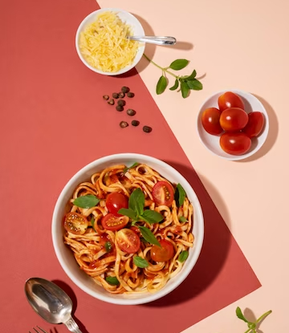

Description
Pasta is a simple dish made of nothing more than 3 ingredients. Fettuccine Alfredo is one of the easiest and most satisfying pasta dishes to make at home. Fresh cream is combined with parmesan cheese and butter to make a luscious Alfredo sauce in only minutes.
The combination of butter, cream, and Parmesan cheese. The butter and cream create a rich, velvety base, while the Parmesan cheese adds a tangy, salty flavour.
Ingredients
- Butter
- Cream
- Seasonings
- Parmesan cheese
- Pasta
Steps
- Salt the water and allow it to boil. Add your pasta to the water and cook it for the recommend amount of time on the box.
- Melt your butter in your pan. Add garlic to butter and cook until it is aromatic. Slowly add in the heavy cream and half-and-half.
- Grate the Parmesan into the mixture. Add in salt and pepper. Allow the sauce to simmer until it's thick enough to coat the back of a spoon.
- Add the pasta to the sauce. Use about a cup of the reserved pasta water and add it to the pan.